Prediccion de padecer una enfermedad cardíaca
Objetivo: El objetivo de este caso de estudio es lograr predecir la probabilidad de que una persona posea una enfermedad cardiaca.
El estudio es realizado en el marco del proceso CRISP-DM:

Comprension del negocio
Se entiende como necesidad médica la posibilidad de generar algoritmos predictivos que dado ciertos valores de una persona detecten una enfermedad. En este caso una enfermedad cardiaca.
Comprensión de la data:
Se obtienen 4 dataset recuperados de: https://archive.ics.uci.edu/dataset/45/heart+disease
- Cleveland Clinic Foundation (cleveland.data)
- Hungarian Institute of Cardiology, Budapest
- V.A. Medical Center, Long Beach, CA
- University Hospital, Zurich, Switzerland
De acuerdo con el archivo de presentación, se extrae que todos los dataset poseen 76 atributos por fila (todos con los mismos campos), pero que en los estudios realizados solo son 14. Es más, incluso destaca que solo el de Cleveland fue utilizado como entrenamiento para diferentes aplicaciones de ML. Ningún data set posee los 76 atributos.
Los 14 más usados:
| Name | Role | Type | Demographic | Description | Units | Missing Values |
|---|---|---|---|---|---|---|
| age | Feature | Integer | Age | Age | years | no |
| sex | Feature | Categorical | Sex | no | ||
| cp | Feature | Categorical | no | |||
| trestbps | Feature | Integer | Resting Blood Pressure (on admission to the hospital) | mm Hg | no | |
| chol | Feature | Integer | Serum Cholestoral | mg/dl | no | |
| fbs | Feature | Categorical | Fasting Blood Sugar > 120 mg/dl | no | ||
| restecg | Feature | Categorical | no | |||
| thalach | Feature | Integer | Maximum Heart Rate Achieved | no | ||
| exang | Feature | Categorical | Exercise Induced Angina | no | ||
| oldpeak | Feature | Integer | ST Depression Induced by Exercise Relative to Rest | no | ||
| slope | Feature | Categorical | no | |||
| ca | Feature | Integer | Number of Major Vessels (0-3) Colored by Flourosopy | yes | ||
| thal | Feature | Categorical | yes | |||
| num | Target | Integer | Diagnosis of Heart Disease | no |
| Features | Description |
|---|---|
| Age | Age in year |
| Sex | Gender |
| CP | Chest pain type |
| Trestbps | Resting blood pressure |
| Chol | Serum cholesterol |
| Fbs | Fasting blood sugar |
| Resteg | Resting electrographic results |
| Talach | Maximum heart rate achieved |
| Exang | Exercise induce angina |
| Oldpeak | ST depression induced by exercise relative to rest |
| Slope | The slope of the peak exercise ST segment |
| CA | Number of major vessels coloured by fluoroscopy |
| Thal | Thallium heart scan |
| Goal | Diagnosis of heart disease |
Podemos observar que de esos 76 hay muchos los cuales o no tienen descripción, o son datos identificativos (como son nombre, id, etc) los cuales no generan un aporte significativo al modelo, y deben ser retirados para ahorrar tiempo de ejecución.
Para este caso se utilizarán los 14 atributos. Los cuales están disponibles en el repositorio de UCL como la versión procesada de los datos.
Se realizará de la siguiente forma: se verá cada dataset por separado para luego realizarlos sobre los 4 dataset unidos.
Estadística
Cleveland
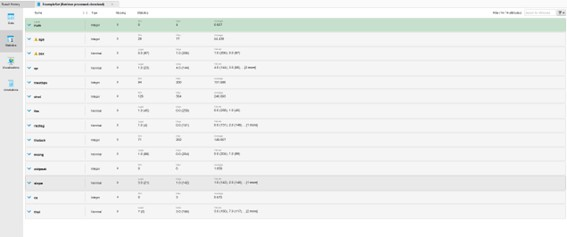
Como se puede observar se destaca la casi nula presencia de valores faltantes, solo 4 en la columna ca. Los cuales representan un 0.1% del dataset, por lo tanto, se eliminarán.
A su vez podemos ver que los atributos tienen una relativa distribución gausiana
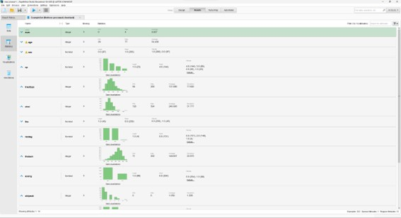
- Obs1: La clase num (variable objetivo), está bastante equilibrada con 164 con NO padecieron una enfermedad contraria a los 139 que SI padecieron.
- Obs2: Usando un boxplot se ve que hay relativamente pocos outliers, salvo chol el cual tiene valores bastantes grandes
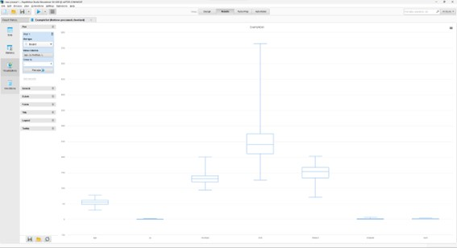
- Obs3: Se puede ver que en thal tenemos dos valores con “?” lo que significa que no son valores verdaderos, también se eliminara pues representa menos del 0.1%
Switzerland
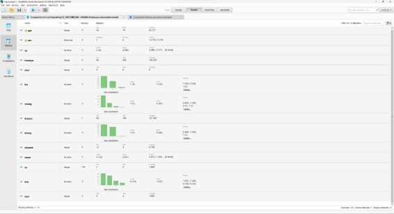
-Obs1: faltan muchos datos, una columna no tiene registros (ca) lo cual afecta los datos, mas tras ver que en si es una variable que puede afectar y es condicionante.
-Obs2: muchos valores faltantes en los demás con “?”
-Conclusión: Se descarta el dataset para entrenar modelos, puesto que el tratamiento no puede ser el mejor, aun así, no se descarta el hecho de usarlo para evaluar performance del modelo final.
Hungary
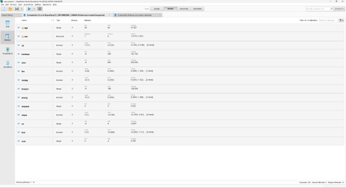
Obs1: Podemos ver que varios de hungary tienen valores faltantes en -9 lo cual hace que el dataset no sea útil para entrenar modelos.
Va
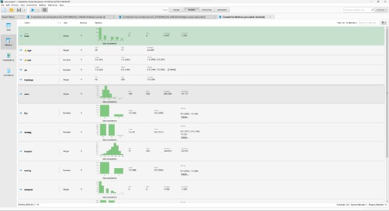
- Obs1: Igual que en los casos anteriores, este dataset tambien tiene muchos valores faltantes, por lo cual su uso podría perjudicar el modelo.
Visualizacion
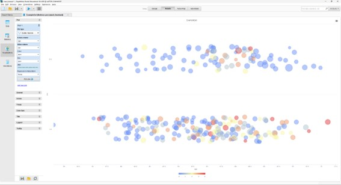
Se puede observar como en general parece haber mas mujeres sin enfermedad que hombres, y que a su vez no depende tanto de la edad. Lo cual en parte puede explicarse debido a que predominan mas hombres en el dataset que mujeres.
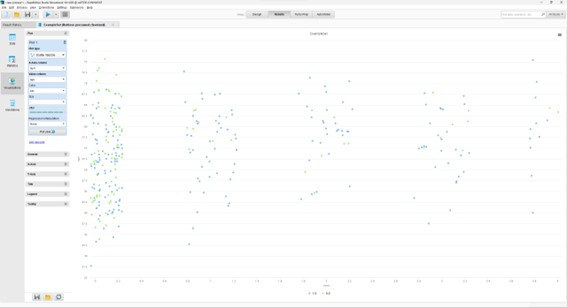
Otra forma de visualización, verde representa a las mujeres.
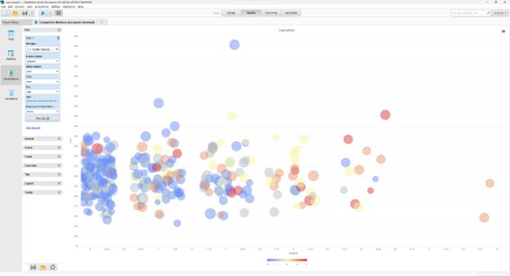
Realizando un scatterplot entre oldpeak y chol podemos notar que a medida que oldpeak aumenta más propensos son a tener una enfermedad cardiaca.
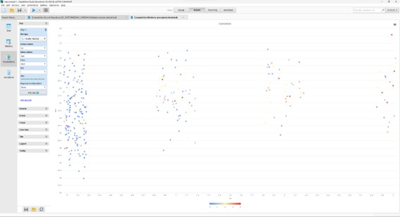
Se ve que a mayor Ca aumenta considerablemente
Preparacion de los datos
Se van a aplicar los cambios definidos en la parte anterior.
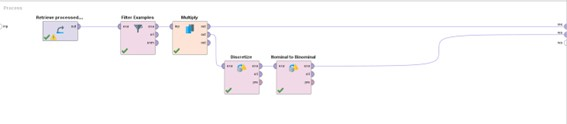
Primero se quitan tanto outliers, como valores faltantes y luego se realiza un multiply para tener dos canales posibles: uno donde tenemos las cinco clases y otro donde tenemos solo dos.
Modelado
Se va a trabajar tanto sobre Cleveland, debido a que los otros 3 tienen muchos valores faltantes como para poder trabajar sobre ellos.
En esta sección se utilizarán 4 algoritmos de clasificación:
- Regresión logística
- KNN
- Naive Bayes
En cada modelo se utilizará la misma estructura, primero un tratamiento previo de datos en donde se trabajará los datos para así poder aplicarlos al algoritmo correspondiente. Luego se multiplicará el dataset para así tener cuatro canales diferentes uno para un cross validation común con los 14 atributos y los otros tres con feature selection. Se realizará tanto en Python como en RM
Se probará como una clasificación binomial, así como una clasificación de 4 clases. Para comparar, aunque se entiende que el problema puede agruparse la variable de objetivo en dos (como se ve en preparación de los datos).
La estructura de RM para cada algoritmo es la siguiente:
Donde proceso de datos es el subproceso que realiza el siguiente tratamiento previo:
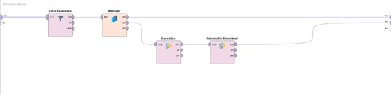
Luego el subproceso tanto de non binary como de binary se componen de:
- Cross validation
- Foward selection
- Backward Elimination
- Evolutionary
Los resultados se medirán en performance.
Dentro de cada proceso de modelo se vera de esta manera:
Bloque de cross validation:
- Bloque del algoritmo del modelo: configuración por defecto
- Bloque de Aplicar modelo
- Bloque de performance por defecto
Foward y backward selection ambos tienen la configuración por defecto.
Optimize selection (Evolutionary) tiene 30 como número máximo de generaciones y 20 de tamaño de población.
Paso previo: Puesto que en un caso vamos a trabajar con una clasificación binaria se puede realizar una evaluación ROC. Para eso realizamos lo siguiente:
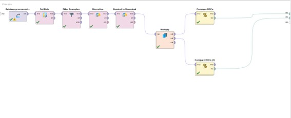
Tenemos dos canales uno con datos sin normalizar y el otro con datos normalizados. En cada ROC se comparará KNN, RL y NB.
{{ product.shortDescripton }}
- Obs1: Knn no esta correcto tras la normalización
- Obs2: En ambos casos la regresión logística parece ser el modelo mas efectivo.
Regresion Logistica
{{ product.shortDescripton }}
KNN
Binario
{{ product.shortDescripton }}
No Binario
{{ product.shortDescripton }}
NB
Binario
{{ product.shortDescripton }}
No Binario
{{ product.shortDescripton }}
Resultados en Python
Clasificacion binaria
| Model | Accuracy |
|---|---|
| LDA | 0.875000 |
| Logistic Regression | 0.863636 |
| Gaussian Naive Bayes | 0.852273 |
| Bernoulli NB | 0.818182 |
| K Nearest Neighbors | 0.613636 |
Clasificacion no binaria
| Model | Accuracy |
|---|---|
| LDA | 0.590909 |
| Gaussian Naive Bayes | 0.579545 |
| K Nearest Neighbors | 0.534091 |
| Multinomial NB | 0.454545 |
Evaluacion
Knn para 4 clases se descarta puesto que el algoritmo no fue preciso para la clase num = 4, se estima que este error es debido a la falta de valores 4
Se llego a los siguientes resultados (comparando entre py y rm), considerando aquellos mayores a 60.
| Model | Accuracy |
|---|---|
| LDA | 87.5 |
| LR | 86.3 |
| LR | 85.7 |
| LR | 85.33 |
| NB | 85.2 |
| LR | 84.99 |
| LR | 82.94 |
| LR | 82.63 |
| NB | 82.62 |
| NB | 81.8 |
| NB | 81.63 |
| KNN | 81 |
| KNN | 61 |
Conclusión
RapidMiner: La regresión logística fue la que obtuvo mejores resultados. KNN para 4 clases no es optimo puesto que al disminuir las clases y no tener una distribución uniforme de la misma.
Métodos de feature selection: aumentan el rendimiento y el mas efectivo en la gran mayoría de casos fue Foward selection. Aunque en los que Evolutionary no tenia baja performance el modelo mejoraba contra el mencionado anteriormente.
Python: LDA fue el mejor, pero la regresión logística dio un resultado muy similar, el cual considerando el margen de error podríamos decir que ambos tienen un rendimiento similar
Se puede decir que el mejor algoritmo para enfrentar este caso es la regresión logística si lo vemos como un problema de clasificación binaria, sino en todo caso LDA tiene una eficiencia de casi 60% lo cual considerando que la probabilidad es 20% si se escoge aleatoriamente una clase es para tener en cuenta. Mismo con naive bayes.
Los resultados coinciden con UCL, en donde se trataba a RL como el mejor algoritmo para este problema.
Se puede observar que se dio que el rendimiento del modelo fue mejor en la clasificación binaria que en la clasificación con varias clases, esto principalmente se puede deber a que la distribución de los datos con varias clases no era la más uniforme, teníamos muchísimos 0 menos 1 y así descendiendo hasta tener unos pocos 4.
Como mejora continua se podría partir de la base de la clasificación binaria y a partir de la respuesta de este modelo evaluarlo con uno de 5 clases.
Deploy
Se utilizaría como modelo: LDA, RL, NB y se tomaría como una clasificación binaria.